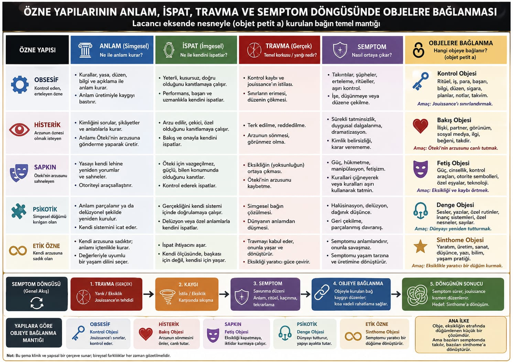
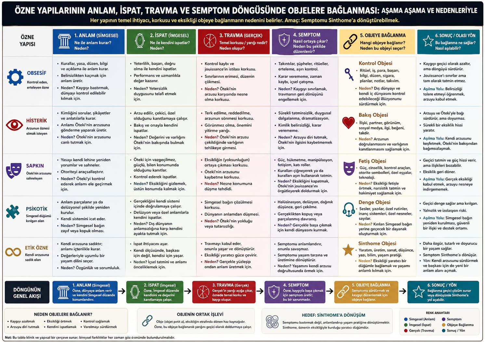

Obsessive · control object
Ritual, work, money, knowledge, order, cigarettes, plans, notes, calendar. Aim: put a limit on jouissance.
Object-cause of desire
Not an object we have, but the leftover that makes us want. It is the bit of the Real that sticks to the Imaginary and Symbolic: a gaze, a voice, a breast, a scene, a nothing that glows. The charts show how each structure binds to a typical object in order to manage anxiety.
After trauma, anxiety rises. The subject attaches to an object (objet petit a) that seems to plug the hole. The attachment is already a small solution. It can freeze into a symptom, or be reworked into a sinthome.
Ritual, work, money, knowledge, order, cigarettes, plans, notes, calendar. Aim: put a limit on jouissance.
Partner, appearance, social look, likes, praise. Aim: keep the Other’s desire alive.
Power, sexuality as scene, control tools, authority symbols, special things, tech. Aim: cover lack and loss.
Sounds, writings, special routines, belief-systems, numbers. Aim: hold the world together.
Making, work, art, thought, writing, a life-practice. Aim: knot a creative bond with lack, rather than plug it.

A companion chart asks, at each of the six steps: what is the need, the fear, the lack that makes this object necessary? Attachment is motivated. Dropping it without a new knot is not freedom; it is often panic.
